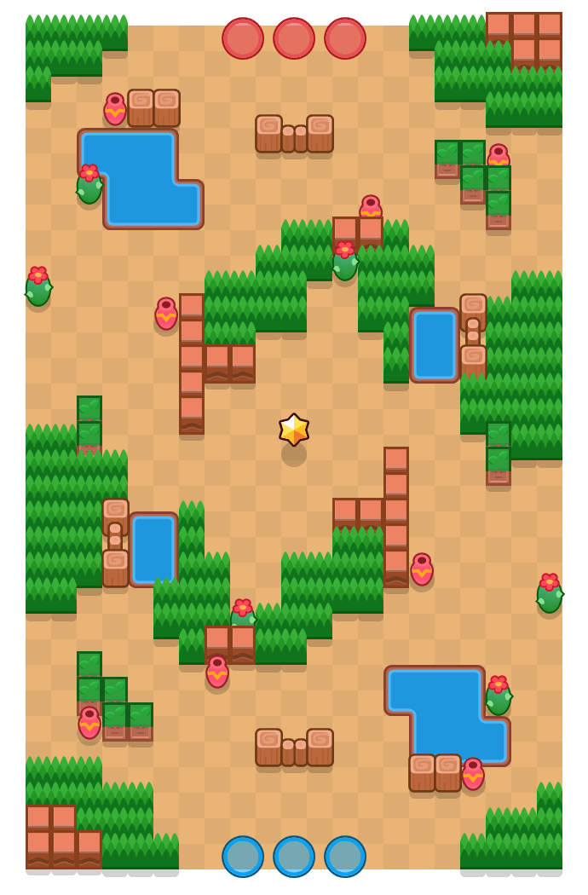

무성한 오아시스(Overgrown Oasis)

게임 모드
현재 상태
삭제
제작자
ToxinLab
존재 기간
2019년 8월 29 ~ 2019년 12월 18일
마지막 경쟁전 등장
2019년 12월 14일
가장 최근에 나온 "더 깊은 위험", "육지 발견"과 "거미줄", "폭염"을 제외한 최신 바운티 맵들 중 유일하게 파워 플레이 맵으로 나왔던 맵. 다른 맵들은 파워 플레이 출시인 2019년 10월 전에 삭제되었지만 이 맵은 그때 당시 바운티 로테이션에 나왔기 때문에 파워 플레이 맵으로도 선정될 수 있었다.